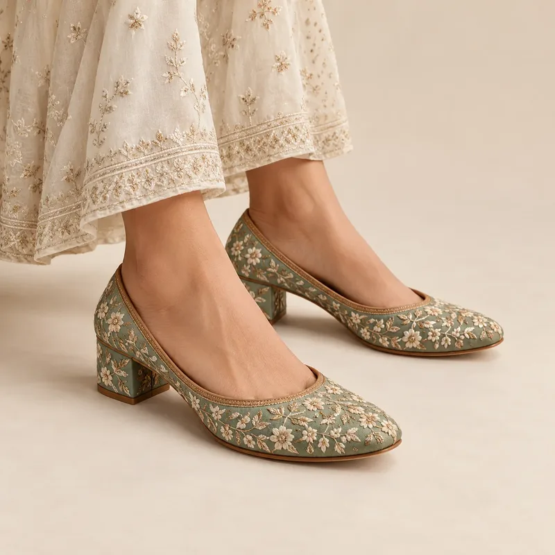
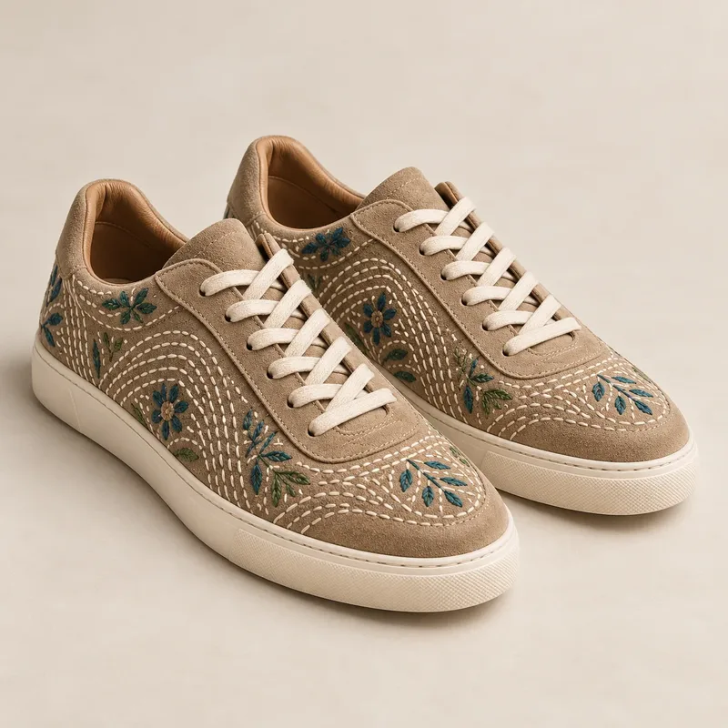
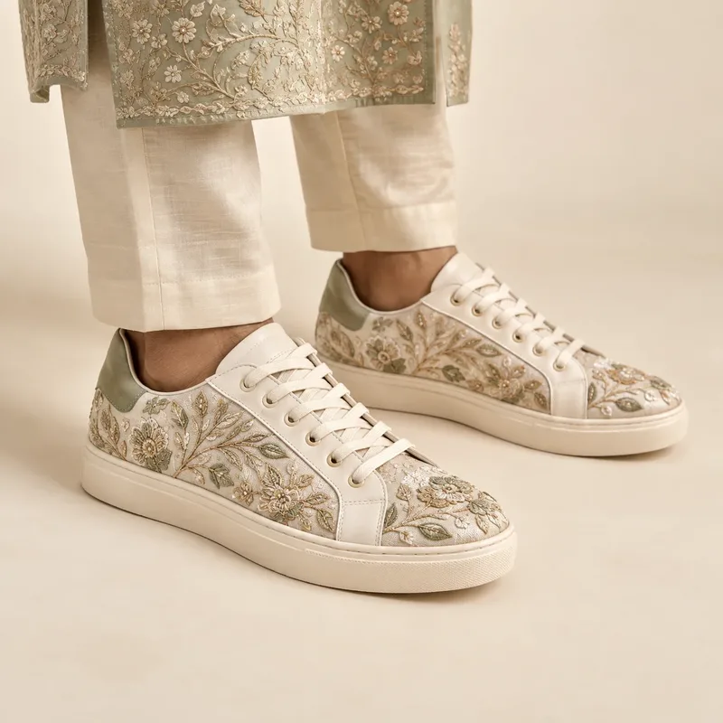

Indian footwear trends: Kolhapuris, juttis and the new Indian sneaker
Kolhapuri chappals after Prada SS26, block-heel and wedding juttis, and handcrafted Indian sneakers with kantha embroidery: the footwear details rising in India for 2026–27.

Indian footwear had an unusual year. When Prada showed Kolhapuri-inspired sandals in 7 of 56 looks in its Spring/Summer 2026 show, it started a public debate about credit for Indian craft. One result was a wave of pride in the original: GI-tagged Kolhapuris are firmly back in focus.
Here are the footwear details Forecut is tracking for the Indian market, and what they mean for ranges.
Kolhapuris: rising, then peaking
Kolhapuri chappals are rising now and expected to peak through Summer 27. They work with ethnic and western looks alike, which is exactly how younger shoppers are wearing them. Brands that credit the craft cluster and source authentic GI-tagged pairs will benefit most from the renewed attention.
Juttis: comfort meets ceremony
- Block-heel juttis: a low block heel makes long events comfortable. Rising.
- Embellished wedding juttis with zari, beads and mirror work: a steady peak through the wedding seasons.
- Pointed juttis with bandhgalas: the correct shoe for formal menswear.
- Mojaris with kurta sets: the classic festive pairing, holding steady.


The Indian sneaker grows up
The most interesting movement is in sneakers made in India for Indian feet. Handcrafted full-grain leather sneakers and kantha-embroidered sneakers are emerging now and expected to rise through 2027. Gully Labs, for example, makes everyday leather sneakers with Indian colour stories and kantha embroidery. Wider lasts shaped for Indian foot widths are an emerging detail worth testing.


Sneakers are also entering weddings. Sneakers for the groom, clean or embellished, are now accepted for sangeet and mehendi, and sarees worn with sneakers are a Gen Z staple.

Price bands in India
| Item | Value ₹ | Mid ₹ | Premium ₹ |
|---|---|---|---|
| Kolhapuri chappals | 499–1,299 | 1,500–3,500 | 6,000+ |
| Embroidered juttis | 799–1,499 | 1,800–4,000 | 7,500+ |
What to do this season
- Source one GI-tagged hero product and credit the craft cluster on the label.
- Pair Kolhapuris and juttis with western looks in your imagery, not only with ethnic wear.
- Test a small run of embroidered or handcrafted sneakers and a wider-fit option.